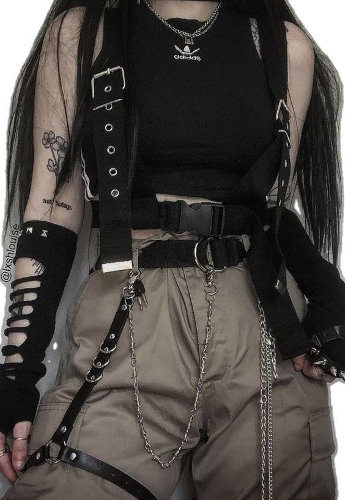

MAGIC FASHION
OUTFITS

MAGIC FASHION
Magic-Fashion es una página de ropa con sede en Luque, Paraguay, que fue fundada por Fiorella Ocampos con la visión de introducir al mercado una selección cuidadosamente curada de prendas que no solo sean funcionales, sino que también destaquen por su estilo estético. Desde su fundación, Magic-Fashion se ha posicionado como un destino para aquellos que buscan prendas que no solo vistan, sino que también expresen un sentido único de moda y personalidad. El nombre "Magic-Fashion" sugiere una experiencia mágica al vestir, donde cada prenda seleccionada puede transformar un look ordinario en algo extraordinario. La tienda online ofrece una variedad de opciones, desde ropa casual hasta piezas más elegantes y exclusivas, todas seleccionadas con el objetivo de capturar las últimas tendencias y ofrecer diseños que reflejen el gusto y la sensibilidad de Fiorella Ocampos, la fundadora apasionada por la moda y el estilo.
MAS INFORMACION
La localización en Luque, Paraguay, no solo sirve como base operativa, sino también como un punto estratégico para atender a una clientela diversa y global. Esto permite a Magic-Fashion conectar con diferentes mercados y adaptarse a las demandas cambiantes del mundo de la moda contemporánea. El propósito fundamental de Magic-Fashion es dar a conocer y promover no solo la ropa como una necesidad básica, sino como una forma de arte y expresión personal. A través de su plataforma online, la marca busca no solo vender productos, sino también inspirar y empoderar a sus clientes, invitándolos a explorar y descubrir su propio estilo único. En resumen, Magic-Fashion no solo ofrece ropa estética, sino que también encarna un compromiso con la calidad, la innovación y la expresión personal a través de la moda, posicionándose como una marca distintiva en el panorama de la moda en Paraguay y más allá.